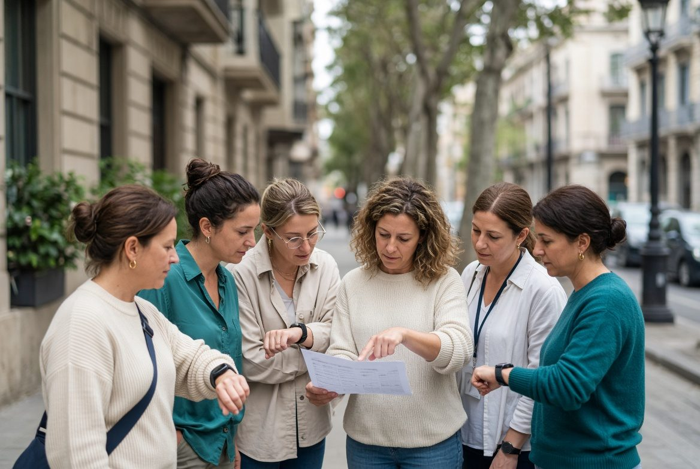

Programa
Una semana en Barcelona. Seis bloques. Ocho plazas.
Hay formato. La fecha de aula de la cohorte cero la cierra Andrea al hablar — no publicamos un calendario fantasma.
5 díasLun–vie · aula y calle
+ 2 onlineBrief previo y debrief
6 módulosEl mismo expediente
8 plazasCohorte cero

Mesa: rooming, timing, walkie.

Calle: reloj en mano.
- 01 · ExpedienteQué va en el papel y qué no.
- 02 · Timing realTraslado, check-in, primer slot.
- 03 · Hospitalidad de grupoVIP, alergias, queja en público.
- 04 · Cadena de mandoCliente, proveedor, mesa.
- 05 · DocumentosRooming, runsheet, handover.
- 06 · El día feoSimulacro. Se aprueba resolviendo.
La semana presencial
LUNMesa
MARCalle
MIÉGrupo
JUEFeo
VIECierre